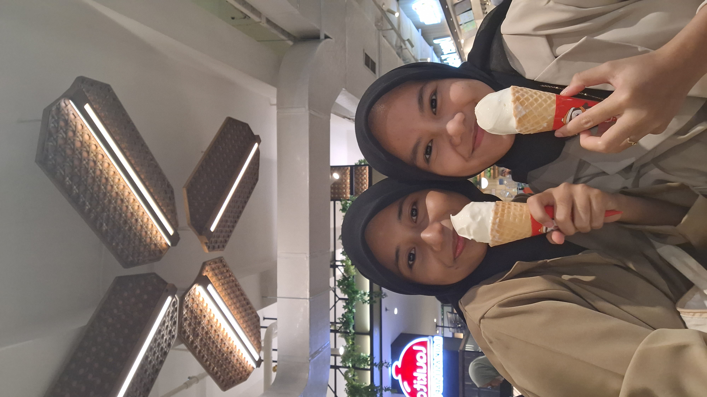
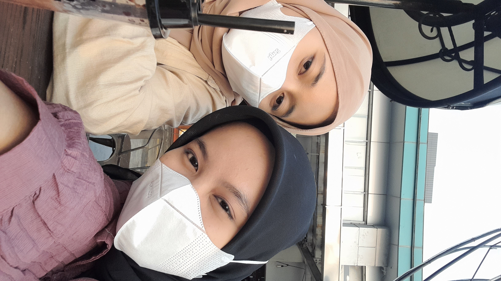
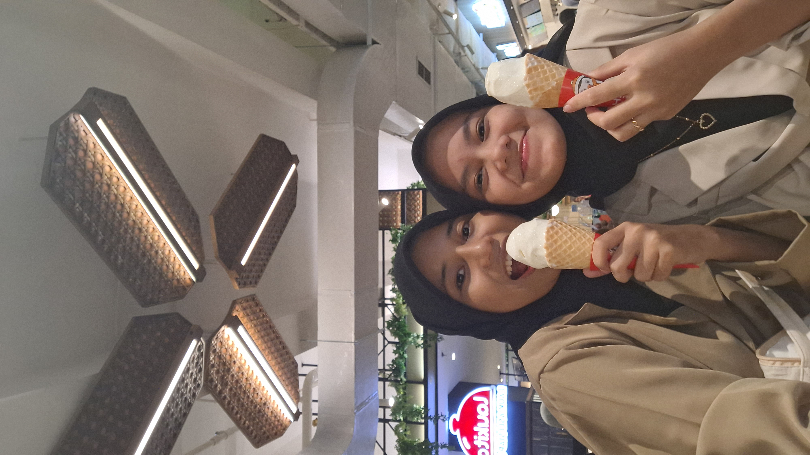

Welcome Salsabila Adinda Fitri
greetings from afifah hadie
Sorry For All My Mistakes
Saturday, 1 July, 2023
Teruntuk sahabat ku, aku tau kamu sangat tulus bersahabat dengan ku, makasih ya udah sabar sama semua sifat ku ini, makasih udah ngertiin aku. maaf ya kadang aku suka nyebelin, maaf aku suka bikin kamu kesel, maaf kalo aku egois, dan maaf juga aku banyak kurang nya buat kamu. aku tau aku sering banget bikin kamu kesel tapi dari banyak nya kesalahan ku, tolong banget ya jangan pernah tinggalin aku, jangan pernah berubah ya tetep jadi bestie yang aku kenal, dan jangan pernah jauhin aku ya. kalo seandainya ada kesalahan aku yang bikin kamu kesel banget sama aku, tolong banget ya langsung bilang aja ke aku, janji aku ga akan marah. tetep jadi bestie yang aku kenal ya.

You Are My Best Friend
Saturday, 6 May, 2023
Halo sahabatku, ga tau kenapa dari awal berteman sama kamu itu aku ngerasa beruntung banget perihal pertemanan, makasih banyak ya karna udah nerima aku sebagai teman kamu dan udah anggap aku sebagai sahabat kamu. jujur aja aku tulus banget sahabatan sama kamu, bahkan udah anggap kamu lebih dari sahabat kaya saudara sendiri. makasih udah dengerin semua cerita dan keluh kesah aku, makasih udah peduli banget sama aku, makasih udah selalu ada buat aku ya. aku ga tau sampai kapan persahabatan kita akan bertahan tapi aku sangat berharap semoga persahabatan kita ga akan ada batas nya, semoga persahabatan kita ga ngalamin people come and go, dan semoga persahabatan kita ga akan rusak hanya karena sebuah permasalahan atau sebuah percintaan. kapanpun itu di saat kamu dalam kondisi kesulitan kamu harus ingat kalo aku selalu jadi orang terdepan untuk bantu kamu dan selalu ada dalam kondisi apapun.
My Bestie
Halo bestie, aku ga tau harus berapa banyak bertrimakasih ke kamu, dan aku ga tau gimana cara bales semua kebaikan kamu. Intinya makasih udah jadi teman yg baik buat aku, makasih udah mau jadi sahabat aku, makasih kamu slalu ada buat aku. thanks for everything and i love you more bestie.
Our Memories
-

Satu di antara keindahan persahabatan adalah bisa saling memahami satu sama lain, dan menerima kekurangan satu sama lain.
Can you accept all the flaws in me? -

Sahabat yang baik adalah sahabat yang berani berterus terang dan membenarkan kesalahan kita agar kita tidak terus hanyut dalam dosa.
Can you promise me to remind each other when we're wrong? -

Tidak ada yang sempurna, sahabatpun pernah berbuat salah, tapi kamu selalu menemukan sebuah alasan untuk memaafkan nya.
Can you forgive all my mistakes? -
 Sangat sulit mencari teman yang tidak lupa kita ketika sudah lama tidak bertemu, namun jika menemukannya. Itulah yang disebut sahabat yang hebat.
Sangat sulit mencari teman yang tidak lupa kita ketika sudah lama tidak bertemu, namun jika menemukannya. Itulah yang disebut sahabat yang hebat.
Can you stay with me when we can't see each other for a long time?
For You
Sahabat adalah keluargamu di setiap waktu Persahabatan adalah sebuah pohon yang meneduhkan Lingkungan baru, teman baru, semua takkan mengubah persahabatan kita Sahabat menunjukkan cintanya disaat ada masalah, bukan saat yang bahagia Hal terindah dari persahabatan adalah memahami dan dipahami, tanpa pernah memaksa dan ingin menang sendiri Sahabat bukan karena telah lama kita kenal tapi karena rasa nyaman dan saling mengerti Satu sahabat sejati lebih dari seribu teman biasa Sahabat sejati sulit untuk ditemukan, jadi hargai dia setelah kau menemukannya Satu sahabat sejati lebih dari seribu teman biasa Terima kasih untuk bahu yang selalu ada, pelukan yang hangat, dan ucapan yang selalu mendukungku menjadi baik. Semua itu membuat persahabatan ini sungguh indah Tidak ada yang bisa menggantikan sahabatku ini Aku berharap persahabatan kita tidak akan mengalami "people come and go" Jangan pernah biarkan suatu persahabatan hancur hanya karna perihal cinta